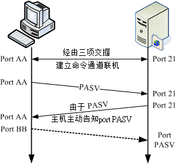

21.1 FTP 的数据链路原理
FTP (File transfer protocol) 是相当古老的传输协议之一，他最主要的功能是在服务器与客户端之间进行档案的传输。 这个古老的协议使用的是明码传输方式，且过去有相当多的安全危机历史。为了更安全的使用 FTP 协议，我们主要介绍较为安全但功能较少的 vsftpd 这个软件吶。
2.1.1 FTP 功能简介
FTP 服务器的功能除了单纯的进行档案的传输与管理之外，依据服务器软件的设定架构，它还可以提供几个主要的功能。 底下我们约略的来谈一谈：
- 不同等级的用户身份：user, guest, anonymous
FTP 服务器在预设的情况下，依据使用者登入的情况而分为三种不同的身份，分别是： (1)实体账号,real user；(2)访客, guest；(3)匿名登录者, anonymous 这三种。这三种身份的用户在系统上面的权限差异很大喔！例如实体用户取得系统的权限比较完整， 所以可以进行比较多的动作；至于匿名登录者，大概我们就仅提供他下载资源的能力而已，并不许匿名者使用太多主机的资源啊！ 当然，这三种人物能够使用的『在线指令』自然也就不相同啰！ ^_^
- 命令记录与登录文件记录：
FTP 可以利用系统的 syslogd 来进行数据的纪录， 而记录的数据报括了用户曾经下达过的命令与用户传输数据(传输时间、档案大小等等)的纪录呢！ 所以你可以很轻松的在 /var/log/ 里面找到各项登录信息喔！
- 限制用户活动的目录： (change root, 简称 chroot)
为了避免用户在你的 Linux 系统当中随意逛大街 (意指离开用户自己的家目录而进入到 Linux 系统的其他目录去)， 所以将使用者的工作范围『局限』在用户的家目录底下，嗯！实在是个不错的好主意！FTP 可以限制用户仅能在自己的家目录当中活动喔！如此一来，由于使用者无法离开自己的家目录，而且登入 FTP 后，显示的『根目录』就是自己家目录的内容，这种环境称之为 change root ，简称 chroot ，改变根目录的意思啦！
这有什么好处呢？当一个恶意的使用者以 FTP 登入你的系统当中，如果没有 chroot 的环境下，他可以到 /etc, /usr/local, /home 等其他重要目录底下去察看档案数据，尤其是很重要的 /etc/ 底下的配置文件，如 /etc/passwd 等等。如果你没有做好一些档案权限的管理与保护，那他就有办法取得系统的某些重要信息， 用来『入侵』你的系统呢！所以在 chroot 的环境下，当然就比较安全一些咯！
21.1.2 FTP 的运作流程与使用到的端口
FTP 的传输使用的是 TCP 封包协议，在第二章网络基础中我们谈过， TCP 在建立联机前会先进行三向交握。不过 FTP 服务器是比较麻烦一些，因为 FTP 服务器使用了两个联机，分别是命令信道与数据流通道 (ftp-data) 。这两个联机都需要经过三向交握， 因为是 TCP 封包嘛！那么这两个联机通道的关系是如何呢？底下我们先以 FTP 预设的主动式 (active) 联机来作个简略的说明啰：
 图 21.1-1、FTP 服务器的主动式联机示意图
图 21.1-1、FTP 服务器的主动式联机示意图
简单的联机流程就如上图所示，至于联机的步骤是这样的：
建立命令通道的联机 如上图所示，客户端会随机取一个大于 1024 以上的埠口 (port AA) 来与 FTP 服务器端的 port 21 达成联机， 这个过程当然需要三向交握了！达成联机后客户端便可以透过这个联机来对 FTP 服务器下达指令， 包括查询档名、下载、上传等等指令都是利用这个通道来下达的；
通知 FTP 服务器端使用 active 且告知连接的埠号 FTP 服务器的 21 埠号主要用在命令的下达，但是当牵涉到数据流时，就不是使用这个联机了。 客户端在需要数据的情况下，会告知服务器端要用什么方式来联机，如果是主动式 (active) 联机时， 客户端会先随机启用一个埠口 (图 21.1-1 当中的 port BB) ，且透过命令通道告知 FTP 服务器这两个信息，并等待 FTP 服务器的联机；
FTP 服务器『主动』向客户端联机 FTP 服务器由命令通道了解客户端的需求后，会主动的由 20 这个埠号向客户端的 port BB 联机， 这个联机当然也会经过三向交握啦！此时 FTP 的客户端与服务器端共会建立两条联机，分别用在命令的下达与数据的传递。 而预设 FTP 服务器端使用的主动联机埠号就是 port 20 啰！
如此一来则成功的建立起『命令』与『数据传输』两个信道！不过，要注意的是， 『数据传输信道』是在有数据传输的行为时才会建立的通道喔！并不是一开始连接到 FTP 服务器就立刻建立的通道呢！留意一下啰！
- 主动式联机使用到的埠号
利用上述的说明来整理一下 FTP 服务器端会使用到的埠号主要有：
- 命令通道的 ftp (默认为 port 21) 与
- 数据传输的 ftp-data (默认为port 20)。
再强调一次，这两个埠口的工作是不一样的，而且，重要的是两者的联机发起端是不一样的！首先 port 21 主要接受来自客户端的主动联机，至于 port 20 则为 FTP 服务器主动联机至客户端呢！这样的情况在服务器与客户端两者同时为公共 IP (Public IP) 的因特网上面通常没有太大的问题，不过，万一你的客户端是在防火墙后端，或者是 NAT 服务器后端呢？会有什么问题发生呢？底下我们来谈一谈这个严重的问题！
- 在主动联机的 FTP 服务器与客户端之间具有防火墙的联机问题
回想一下我们的第九章防火墙！ 一般来说，很多的局域网络都会使用防火墙 (iptables) 的 NAT 功能，那么在 NAT 后端的 FTP 用户如何连接到 FTP 服务器呢？ 我们可以简单的以下图来说明：
 图 21.1-2、 FTP 客户端与服务器端联机中间具有防火墙的联机状态
图 21.1-2、 FTP 客户端与服务器端联机中间具有防火墙的联机状态
用户与服务器间命令信道的建立： 因为 NAT 会主动的记录由内部送往外部的联机信息，而由于命令信道的建立是由客户端向服务器端联机的， 因此这一条联机可以顺利的建立起来的；
用户与服务器间数据信道建立时的通知： 同样的，客户端主机会先启用 port BB ，并透过命令通道告知 FTP 服务器，且等待服务器端的主动联机；
服务器主动连到 NAT 等待转递至客户端的联机问题： 但是由于透过 NAT 的转换后，FTP 服务器只能得知 NAT 的 IP 而不是客户端的 IP ， 因此 FTP 服务器会以 port 20 主动的向 NAT 的 port BB 发送主动联机的要求。 但你的 NAT 并没有启动 port BB 来监听 FTP 服务器的联机啊！
了解问题的所在了吗？在 FTP 的主动式联机当中，NAT 将会被视为客户端，但 NAT 其实并非客户端啊， 这就造成问题了。如果你曾经在 IP 分享器后面连接某些 FTP 服务器时，可能偶尔会发现明明就连接上 FTP 服务器了 (命令通道已建立)，但是就是无法取得文件名的列表，而是在超过一段时间后显示『 Can't build data connection: Connection refused，无法进行数据传输』之类的讯息， 那肯定就是这个原因所造成的困扰了。
那有没有办法可以克服这个问题呢？难道真的在 Linux NAT 后面就一定无法使用 FTP 吗？当然不是！ 目前有两个简易的方法可以克服这个问题：
使用 iptables 所提供的 FTP 侦测模块：
其实 iptables 早就提供了许多好用的模块了，这个 FTP 当然不会被错过！ 你可以使用 modprobe 这个指令来加载 ipconntrack_ftp 及 ip_nat_ftp 等模块，这几个模块会主动的分析『目标是 port 21 的联机』信息， 所以可以得到 port BB 的资料，此时若接受到 FTP 服务器的主动联机，就能够将该封包导向正确的后端主机了！ ^^
不过，如果你链接的目标 FTP 服务器他的命令通道默认端口号并非标准的 21 埠号时 (例如某些地下 FTP 服务器)， 那么这两个模块就无法顺利解析出来了，这样说，理解吗？
客户端选择被动式 (Passive) 联机模式：
除了主动式联机之外，FTP 还提供一种称为被动式联机的模式，什么是被动式呢？ 既然主动式是由服务器向客户端联机，反过来讲，被动式就是由客户端向服务器端发起联机的啰！ 既然是由客户端发起联机的，那自然就不需要考虑来自 port 20 的联机啦！关于被动式联机模式将在下一小节介绍喔！
21.1.3 客户端选择被动式联机模式
那么什么是被动式联机呢？我们可以使用底下的图示来作个简略的介绍喔：
 图 21.1-3、FTP 的被动式数据流联机流程
用户与服务器建立命令信道： 同样的需要建立命令通道，透过三向交握就可以建立起这个通道了。
客户端发出 PASV 的联机要求： 当有使用数据信道的指令时，客户端可透过命令通道发出 PASV 的被动式联机要求 (Passive 的缩写)， 并等待服务器的回应；
FTP 服务器启动数据端口，并通知客户端联机： 如果你的 FTP 服务器是能够处理被动式联机的，此时 FTP 服务器会先启动一个埠口在监听。 这个端口号码可能是随机的，也可以自定义某一范围的埠口，端看你的 FTP 服务器软件而定。 然后你的 FTP 服务器会透过命令通道告知客户端该已经启动的埠口 (图中的 port PASV)， 并等待客户端的联机。
客户端随机取用大于 1024 的埠口进行连接： 然后你的客户端会随机取用一个大于 1024 的端口号来对主机的 port PASV 联机。 如果一切都顺利的话，那么你的 FTP 数据就可以透过 port BB 及 port PASV 来传送了。
发现上面的不同点了吗？被动式 FTP 数据信道的联机方向是由客户端向服务器端联机的喔！ 如此一来，在 NAT 内部的客户端主机就可以顺利的连接上 FTP Server 了！但是，万一 FTP 主机也是在 NAT 后端那怎么办...呵呵！那可就糗了吧～ @_@这里就牵涉到更深入的 DMZ 技巧了，我们这里暂不介绍这些深入的技巧，先理解一下这些特殊的联机方向， 这将有助于你未来服务器架设时候的考虑因素喔！
此外，不晓得你有无发现，透过 PASV 模式，服务器在没有特别设定的情况下，会随机选取大于 1024 的埠口来提供客户端连接之用。那么万一服务器启用的埠口被搞鬼怎么办？而且， 如此一来也很难追踪来自入侵者攻击的登录信息啊！所以，这个时候我们可以透过 passive ports 的功能来『限定』服务器启用的 port number 喔！
21.1.4 FTP 的安全性问题与替代方案
其实，在 FTP 上面传送的数据很可能被窃取，因为 FTP 是明码传输的嘛！而且某些 FTP 服务器软件的资安历史问题也是很严重的。 因此，一般来说，除非是学校或者是一些社团单位要开放没有机密或授权问题的资料之外，FTP 是少用为妙的。
拜 SSH 所赐，目前我们已经有较为安全的 FTP 了，那就是 ssh 提供的 sftp 这个 server 啊！这个 sftp-server 最大的优点就是：『在上面传输的数据是经过加密的』！所以在因特网上面流窜的时候， 嘿嘿！毕竟是比较安全一些啦！所以建议你，除非必要，否则的话使用 SSH 提供的 sftp-server 功能即可～
然而这个功能对于一些习惯了图形接口，或者是有中文档名的使用者来说，实在是不怎么方便， 虽说目前有个图形接口的 filezilla 客户端软件，不过很多时候还是会发生一些莫名的问题说！ 所以，有的时候 FTP 网站还是有其存在的需要的。如果真的要架设 FTP 网站，那么还是得需要注意几个事项喔：
- 随时更新到最新版本的 FTP 软件，并随时注意漏洞讯息；
- 善用 iptables 来规定可以使用 FTP 的网域；
- 善用 TCP_Wrappers 来规范可以登入的网域；
- 善用 FTP 软件的设定来限制使用你 FTP 服务器的使用者的不同权限啊；
- 使用 Super daemon 来进阶管理你的 FTP 服务器；
- 随时注意用户的家目录、以及匿名用户登入的目录的『档案权限』；
- 若不对外公开的话，或许也可以修改 FTP 的 port 。
- 也可以使用 FTPs 这种加密的 FTP 功能！
无论如何，在网络上听过太多人都是由于开放 FTP 这个服务器而导致整个主机被入侵的事件，所以， 这里真的要给他一直不断的强调，要注意安全啊！
21.1.5 开放什么身份的使用者登入
既然 FTP 是以明码传输，并且某些早期的 FTP 服务器软件也有不少的安全漏洞，那又为何需要架设 FTP 服务器啊？ 没办法啊，总是有人有需要这个玩意儿的，譬如说各大专院校不就有提供 FTP 网站的服务吗？ 这样可以让校内的同学共同分享校内的网络资源嘛！不过，由于 FTP 登入者的身份可以分为三种， 你到底要开放哪一种身份登入呢？这个时候你可以这样简单的思考一下啰：
- 开放实体用户的情况 (Real user)：
很多的 FTP 服务器默认就已经允许实体用户的登入了。不过，需要了解的是，以实体用户做为 FTP 登入者身份时， 系统默认并没有针对实体用户来进行『限制』的，所以他可以针对整个文件系统进行任何他所具有权限的工作。 因此，如果你的 FTP 使用者没能好好的保护自己的密码而导致被入侵，那么你的整个 Linux 系统数据将很有可能被窃取啊！ 开放实体用户时的建议如下：
使用替代的 FTP 方案较佳： 由于实体用户本来就可以透过网络连接到主机来进行工作 (例如 SSH)，因此实在没有需要特别的开放 FTP 的服务啊！因为例如 sftp 本来就能达到传输档案的功能啰！
限制用户能力，如 chroot 与 /sbin/nologin 等： 如果确定要让实体用户利用 FTP 服务器的话，那么你可能需要让某些系统账号无法登入 FTP 才行，例如 bin, apache 等等。 最简单常用的作法是透过 PAM 模块来处理，譬如 vsftpd 这个软件默认可以透过 /etc/vsftpd/ftpusers 这个档案来设定不想让他具有登入 FTP 的账号。另外，将使用者身份 chroot 是相当需要的！
访客身份 (Guest)
通常会建立 guest 身份的案例当中，多半是由于服务器提供了类似『个人 Web 首页』的功能给一般身份用户， 那么这些使用者总是需要管理自己的网页空间吧？这个时候将使用者的身份压缩成为 guest ，并且将他的可用目录设定好，即可提供使用者一个方便的使用环境了！且不需要提供他 real user 的权限喔！ 常见的建议如下：
仅提供需要登入的账号即可，不需要提供系统上面所有人均可登入的环境啊！
当然，我们在服务器的设定当中，需要针对不同的访客给他们不一样的『家目录』， 而这个家目录与用户的权限设定需要相符合喔！例如要提供 dmtsai 这个人管理他的网页空间，而他的网页空间放置在 /home/dmtsai/www 底下，那我就将 dmtsai 在 FTP 提供的目录仅有 /home/dmtsai/www 而已，比较安全啦！而且也方便使用者啊！
针对这样的身份者，需要设定较多的限制，包括：上下传档案数目与硬盘容量的限制、 联机登入的时间限制、许可使用的指令要减少很多很多，例如 chmod 就不要允许他使用等等！
匿名登录使用者 (anonymous)
虽然提供匿名登录给因特网的使用者进入实在不是个好主意，因为每个人都可以去下载你的数据， 万一带宽被吃光光怎么办？但如同前面讲过的，学校单位需要分享全校同学一些软件资源时， FTP 服务器也是一个很不错的解决方案啊！你说是吧。如果要开放匿名用户的话，要注意：
无论如何，提供匿名登录都是一件相当危险的事情，因为只要你一不小心， 将重要的资料放置到匿名者可以读取的目录中时，那么就很有可能会泄密！与其战战兢兢，不如就不要设定啊～
果真要开放匿名登录时，很多限制都要进行的，这包括：(1)允许的工作指令要减低很多， 几乎就不许匿名者使用指令啦、(2)限制文件传输的数量，尽量不要允许『上传』数据的设定、 (3)限制匿名者同时登入的最大联机数量，可以控制盗连喔！
一般来说，如果你是要放置一些公开的、没有版权纠纷的数据在网络上供人下载的话， 那么一个仅提供匿名登录的 FTP 服务器，并且对整个因特网开放是 OK 的啦！ 不过，如果你预计要提供的的软件或数据是具有版权的，但是该版权允许你在贵单位内传输的情况下， 那么架设一个『仅针对内部开放的匿名 FTP 服务器 (利用防火墙处理) 』也是 OK 的啦！
如果你还想要让使用者反馈的话，那是否要架设一个匿名者可上传的区域呢？鸟哥对这件事情的看法是.... 『万万不可』啊！如果要让使用者反馈的话，除非该使用者是你信任的，否则不要允许对方上传！ 所以此时一个文件系统权限管理严格的 FTP 服务器，并提供实体用户的登入就有点需求啦！ 总之，要依照你的需求来思考是否有需要喔！